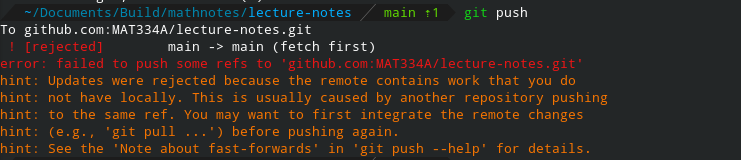

Working Locally
Working with the markdown for this document locally requires some setup. Let’s start by cloning the GitHub repository — creating a local copy on your device.
Installing git
For Linux, MacOS, and Windows, follow this tutorial to install Git. Git may require additional configuration.
You may also want to set up GitHub SSH authentication so that you don’t have to supply your GitHub credentials when pushing (saving) your code to GitHub.
Working with git and the commandline
On Windows, open Git Bash. On MacOS and Linux, open terminal window.
cd: Changes the working directory.- For example,
cd ./Documentsmoves to a subfolder calledDocuments. cd ../changes to the folder that contains the current directory (moves up one directory).
- For example,
pwdstands for print working directory. As its name suggests, runningpwdprints the path to the directory you’re in.lslists files in the current directory.
Now, let’s clone the GitHub repository:
- Choose a directory to store the contents of the
mdbookandcdto it. - Type
git clone https://github.com/MAT334A/lecture-notes.git, thenls - You should see a new sub-folder named
lecture-notes.cdto it.
You’ve cloned the repository! You can now open any of the markdown files in the editor of your choice (I suggest VisualStudio Code).
Make a small change in one of the markdown files (and save it!). Try running git status. You should see something like the following:
On branch main
Your branch is up to date with 'origin/main'.
Changes not staged for commit:
(use "git add <file>..." to update what will be committed)
(use "git restore <file>..." to discard changes in working directory)
modified: src/SUMMARY.md
Untracked files:
(use "git add <file>..." to include in what will be committed)
src/contributing/
no changes added to commit (use "git add" and/or "git commit -a")
Above, we can see that I have uncommitted changes in “src/contributing/”. Let’s add those changes to git:
bash$ git add ./src
bash$ git status
On branch main
Your branch is up to date with 'origin/main'.
Changes to be committed:
(use "git restore --staged <file>..." to unstage)
modified: src/SUMMARY.md
new file: src/contributing/mdbook_markdown.md
new file: src/contributing/online_editing.md
new file: src/contributing/working_locally.md
bash$
Now, let’s create the commit:
bash$ git commit --message="A concise description of the changes should go here"
bash$
Now that we’ve collected and labeled our changes, we can push them to GitHub:
bash$ git push
If git complains that it is unable to push, it’s likely that someone else has made changes to the repository that you don’t have! You need to pull their changes:
bash$ git pull
git pull should give instructions for resolving conflicts (if there are any). After resolving conflicts, try pushing again.
bash$ git push
Don’t run git push --force. git push --force can overwrite changes made to the book by others.
Downloading mdbook
If you are familiar with the Rust programming language, follow this tutorial to install mdbook.
If not, download mdbook from its GitHub releases page.
- Select the file for your operating system.
- Extract it.
- Copy the executable file to the folder that has
README.md,src/, etc. (let’s call this the root directory of the repository). - Make sure the executable’s name is in the
.gitignorefile (to see it, typels -ain the commandline — it’s a hidden file). - You should now be able to run
./mdbookfrom the root directory of the repository (or./mdbook.exeif you’re on windows). ./mdbook servewill start a local server (its output will tell you its URL). Opening it in your browser lets you preview the book.- Changing a file should cause the served copy of the book to update.
Git Troubleshooting
Push Failure
Pushing can fail if the server has changes you don’t.

If this happens, you can merge the remote changes or rebase your commits on top of them. Rebasing can help keep the git history simple, so let’s use it.
bash$ git fetch
bash$ git rebase
git fetch gets the changes from the server, but doesn’t apply them. git rebase then applies your changes to the server’s. For more information about rebasing, see this document.